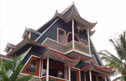
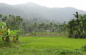
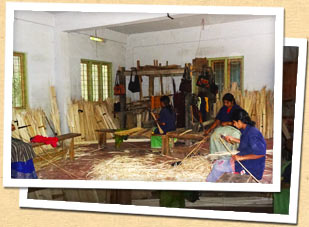
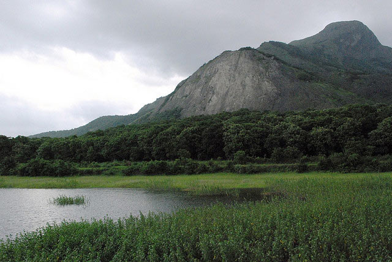

“We welcome you to our humble homes in Thrikkaipetta aka Bamboo Village, where we are blessed with scenic views of the Western Ghaats. We would love to take you on walks around the village and along our plantations of rubber, rice, coffee &coconut, show you our bamboo handicrafts, and introduce you to our culture and traditions.”
~Host families at Bamboo Village, Wayanad
Please email us at untravel@indiauntravelled.com to plan and book your travels.
Overview
Quietly nestled in the Wayanad district of North Kerala, Thrikkaipetta is a charming little village sprinkled with rice paddies and plantations of banana, coconut, coffee & rubber, surrounded by the picturesque backdrop of the Western Ghaats. Besides farming, its residents have mastered the art of beautiful handicrafts, earning it the nickname, Bamboo Village. Seven host families in the village have now opened up their humble but artistically designed homes to travellers, who they lovingly take care of like their own family. Living in Bamboo Village for a few days feels like discovering a whole other universe; you can walk for hours along the village, soaking in its lush greenery and experiencing its modest farming lives, treat yourself to delicious home-cooked food or tea at the village stall, hike into the surrounding hills, volunteer with household chores, interact with the gifted bamboo craftsmen & women, participate in the musical & cultural festivities of your hosts, and escape into the simplicity of life on the countryside.
If you decide to venture out of the village, the tropical forests and hillsides of Wayanad have plenty for you to explore. You can cycle along its gentle slopes or its more rugged terrains, discovering waterfalls, small ponds and lakes, stretches of the colourful tropical forests interspersed with rubber & coconut plantations, and ancient temples. Or you can drive to the pre-historical Edakkal Caves, boat along the Kalapuzha Dam, visit the verdant tea plantations, and bathe in the Soochipara waterfalls. Before you know it, the indulgent hospitality of your hosts at Bamboo Village will draw you right back.
Please email us at untravel@indiauntravelled.com to plan and book your travels.
- A self-designed homestay at Bamboo Village
- Folk performance at the village
- Handmade paintings at the Bamboo Handicraft Unit
- Rice paddies & the Western Ghaats
 The road to the mountains
The road to the mountains- Village walk
- Plantation walk
- Volunteering on the rice paddies
- Tea plantations of North Wayanad. Photo by Dhruvaraj S.

Stay
Accommodation is provided in village homestays, rotated among seven host families. Each home has one or more private guest rooms with an attached western-style bathroom, and provides basic urban comforts, with the promise of warm hospitality.
Large groups can be accommodated across a mix of homestays.
Please email us at untravel@indiauntravelled.com to plan and book your travels.
Food & Drinks
Meals consist of the local North Kerala cuisine, and are freshly prepared in traditional style in the homestay kitchen. Banana and coconut, as well as several fruits, vegetables and condiments like ginger and pepper are locally grown in the village and used in most home-cooked dishes.
Breakfast typically consists of Idli and Dosa, while lunch and dinner are simple vegetarian fare, with a spread of curries, rice and pickles, varying with the seasonal vegetables. You can also opt for a traditional Kerala lunch, with food served on traditional banana leaves.
The village stall offers tea and snacks, and is a good place to soak in the serene beauty of the village.
Please email us at untravel@indiauntravelled.com to plan and book your travels.
Activities
Think of your stay at Bamboo Village as an escape from your busy city life; pamper yourself with long walks around the plantations, find a corner to read a good book or indulge the photographer in you, offer to help with farming activities or household chores, or engage with the residents in hours of conversation.
Activities at Bamboo Village include:
- Village walks
- Hikes & short treks in the surrounding hills.
- Visit to the Bamboo Species Garden.
- Visit to the Bamboo Handicraft Unit.
- Traditional folk music & dance performance.
- Temple visit.
- Interaction at the local school.
- Plantation walk.
- Learning traditional cooking in the homestay kitchen.
- Volunteering in farming activities.
- Volunteering in household chores.
- Long-term volunteering at the handicraft unit.
Activities in Wayanad include:
- Half day or full day cycling trip around Wayanad
- Swimming & rock climbing in the Soochipara Waterfalls.
- Visit to the prehistoric Edakkal Caves.
- Jungle Safari & Deep Forest Trek in the Muthanga Wildlife Sanctuary.
- Tea plantation visit.
- Picnic at the Kuruva Islands.
- Day / Overnight trek to Chembra Peak.
- Visit to Pookot Lake, Sunrise Valley & Phantom Rock.
- Boating at Banasura Sagar Dam, India's largest earth dam.
- Camping & bonfire at a local forest settlement.
- Visit to the traditional tribal settlements in Wayanad.
Please email us at untravel@indiauntravelled.com to plan and book your travels.
 Bamboo craftswoman at work
Bamboo craftswoman at work Bamboo mats on sale at the Bamboo Handicraft Unit
Bamboo mats on sale at the Bamboo Handicraft Unit- Farming day
- Lush greenery in Wayanad. Photo by Nitin Pai.
- Monsoon walk
- The hill country of Wayanad
- Village Walk
- Walk through the farms


{kind=link}
{kind=link}
{kind=link}
{kind=link}
{kind=link}
{kind=link}
{kind=link}
{kind=link}
.jpg){kind=link}
{kind=link}
.jpg){kind=link}
{kind=link}
{kind=link}
{kind=link}
{kind=link}
{kind=link}
{kind=link}
{kind=link}
{kind=link}
{kind=link}
{kind=link}
Costs
Prices at Bamboo Village start at:
Double occupancy: INR 3,250
Solo traveller: INR 2,500
Price includes three meals per day and taxes.
You can also visit Bamboo Village as part of our Best Kept Secrets of Kerala itinerary.
Please email us at untravel@indiauntravelled.com to plan and book your travels.
Location
Thrikkaipetta aka Bamboo Village is located in Wayanad, which is well connected to Bangalore & the rest of Kerala by both state-run and private buses. Kozhikode is the nearest railway station, and the nearest airport is at Calicut.
Best time to visit
October to March are the best months to visit Wayanad, when the weather is cool and misty. If you love the rains, the monsoons are a romantic time to witness the lush greenery of Wayanad.
Things to note:
- Cash and ATMs: Only cash is accepted at the village. The nearest ATM is located in the town of Kalpetta.
- Food: Both vegetarian and non-vegetarian food is available.
- Bathrooms: Each room comes with an attached bathroom, with bucketed or running hot water and western style toilets.
- Electricity: Power cuts are common; please be prepared by carrying torches and spare batteries as needed.
- Phone, Internet and TV: There are no TVs or Wifi, but plenty of natural beauty and interaction with the village folk to keep you entertained. Most phone networks work well.
- Pets: At your own risk and responsibility.
- Alcohol: Not provided.
Checklist
- Light warm clothes if you're travelling in winter
- A good water bottle to refill drinking water
- Walking shoes
- Umbrella, waterproof shoes, poncho if you’re travelling in the rainy season
- Books to read & write, stationery to paint & draw, basically anything you've always loved to do and never got the time to
- Binoculars for bird watching
- Cosmetics you need
- Prescription medicines, if any
- Camera & batteries / charger
- Please carry as little plastic as possible
Please email us at untravel@indiauntravelled.com to plan and book your travels.
Photo Gallery
- A self-designed homestay at Bamboo Village
- Folk performance at the village
- Handmade paintings at the Bamboo Handicraft Unit
- Rice paddies & the Western Ghaats
- The road to the mountains
- Village walk
- Plantation walk
- Volunteering on the rice paddies
- Tea plantations of North Wayanad. Photo by Dhruvaraj S.
- Guest room
- Guest room
- Guest room
- View from a homestay
- Dining at the homestay
- Traditional Kerala lunch
- Bamboo craftswoman at work
- Bamboo mats on sale at the Bamboo Handicraft Unit
- Farming day
- Lush greenery in Wayanad. Photo by Nitin Pai.
- Monsoon walk
- The hill country of Wayanad
- Village Walk
- Walk through the farms
- Bath Room
{kind=link}
Please email us at untravel@indiauntravelled.com to plan and book your travels.
“Our hostess was loving and cooked whatever we asked for; her interaction with our kids made us feel at home. The travel guide took us around places and kept sharing intersting information about Wayanad district. We really enjoyed the trip. Thanks for organizing the pleasant trip.”
~Ms. Kalaivani, travelled with family in December 2015.
“I had such a nice time, it wasn't what I expected but I'm finding that nothing in India really is. The food was great, the local people friendly, and Daniel made a map for me every day to see other places in the region. I am always nervous in new places, and especially in India as a solo woman traveller but found no problems and felt completely safe. I'm very grateful to Daniel and Reena for their hospitality and graciousness. Everyone was very helpful when my travel plans and arrival didn't work as planned as well.
I will mention that the lock on the door to my room didn't function--the door had warped or changed from the weather and didn't close completely. I realized it wasn't an issue after spending more time with the family, I was just a little anxious at the start. Everything was so great! Daniel even let me accompany him to a wedding for photography, a truly unique experience, as was church with reena.”
~Alan Mawer, travelled from the UK in August 2013.
“We had a wonderful holiday in Kerala. Thrikkaipetta was the highlight of our trip.
We enjoyed the bus journey into Wayanad but the arrival at Kochupurakkal Homestay was like arriving in paradise with butterflies on the flowers and birds in the trees. After the incessant noise of the road journey the homestay's location on a quiet lane in front of padi fields and a steep, misty, forested mountain was a complete contrast.
Eliyamma and 'Baby' and their son Varghese made us very welcome. Our room was comfortable and spotlessly clean. For four days we enjoyed learning about life in Kerala, and Thrikkaipetta in particular, through the many discussions we had with our hosts. To experience this was enormously enriching and gave us so many insights into how the village runs and more generally into family life in Kerala.
The food they cooked for us was outstanding. It all tasted wonderful and was perfectly cooked. The meals consisted of so many beautifully cooked Keralan dishes. Eliyamma uses many of her own ingredients, fruits, spices and vegetables, grown either in her garden around the house, in the plot across the lane, in the yam field up the hill or her padi some distance away. Curd came from the cows in the cowshed next to the house. Kate spent one evening with Eliyamma and Baby in the kitchen writing recipes for these excellent dishes.
Raju who lives along the same lane was our guide for three days of walking around Thrikkaipetta. He has a great amount of detailed knowledge about the village. We chose to spend all of our time locally rather than travel to attractions further afield. This was because we valued so much learning in depth about Thrikkaipetta and because Raju is so good at guiding and explaining. He knows many people in the village so we regularly stopped and talked to other people. We loved the landscape that Thrikkaipetta is set in. We walked along footpaths and lanes through tea, rubber, coconut and areca plantations as well as forests and padis. We went to the GUP school, the workshops and shop at Uravu, Shiva temple and climbed to the viewpoint on Manikunnumala Mountain. Kate joined in with the children singing at Anganvadi. 2013 has been such a heavy monsoon that everywhere was lush and verdant and the streams bubbling with water. We enjoyed experiencing the downpours and went everywhere with umbrellas.
One evening P P Daniel and Sumesh came to visit. It was interesting to hear about Kabani. Sumesh described the plans to extend the responsible tourism homestay scheme to other locations. We admired his understanding and dedication.
We reached Thrikkaipetta from Kochi by train to Nilambur and then by bus through the forest to Meppadi. After Thrikkaipetta we went by bus to Thirunelli where we enjoyed more excellent walks. We then left Wayanad by bus to Kannur which was another very scenic journey.
Thank you for your part in enabling us to get so much out of our holiday in Kerala.”
~Alan Mawer, travelled from the UK in August 2013.
To feature your review / testimonial, please write to untravel@indiauntravelled.com.
Please email us at untravel@indiauntravelled.com to plan and book your travels.
How a visit to Bamboo Village makes a difference:
- Bamboo Village is a community-based tourism initiative started by two local organizations – Uravu and Kabani – and aims to provide an alternate source of income to the residents of Thrikkaipetta, through tourism.
- The homestay program includes hospitality training for the local residents, and homestays are chronologically rotated among the host families to provide an equal opportunity to host guests.
- Greener means of transport, like walking and cycling are encouraged, local guides are employed, and raw ingredients for meals are locally sourced from the village as much as possible.
How you can be more responsible on your trip:
- Pack your bags with environmentally friendly things. Carry as little plastic as possible.
- Do not leave behind any non-biodegradable waste, like plastic and batteries.
- What you wear has an impact – environmentally and culturally – dress ethically and appropriately.
- Respect the local culture and refrain from physical intimacy in public places.
- Carry a good water bottle. Filtered water is available at the homestays for refilling your bottle. Refrain from buying numerous plastic mineral water bottles.
- Local food is great. Try it as much as possible and avoid packaged food. Ask for modifications in the food according to your taste, instead of wasting it.
- Avoid excessive consumption of alcohol and refrain from drugs, especially in public places.
- Seek permission before photographing people, so their privacy is respected.
- Do not pluck any plants & flowers, and do not disturb the wildlife.
Please email us at untravel@indiauntravelled.com to plan and book your travels.
Please email us at untravel@indiauntravelled.com to plan and book your travels.